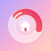

Reno Tracker
A free app for keeping track of what your renovation costs. Snap your receipts, split them across rooms, and see what you’ve spent against your budget.
Open Reno TrackerYour receipts stay on your phone
-
No account, no sign-up. Just open it and start.
-
Everything is saved on your phone only. Nothing is uploaded. Whoever sent you this can’t see your receipts, and you can’t see theirs.
-
Receipts are read on your phone too. The app reads the store, date and total itself, without sending your photos anywhere.
Add it to your phone
It takes about two minutes. After that it has its own icon, opens like an app and works offline.
- 1Open the link in Safari. If it opened inside another app, like Facebook, Instagram or Gmail, tap ••• or the compass and choose Open in Safari.
- 2Tap Open Reno Tracker at the top of this page.
- 3Tap Share . If you can’t see it, tap ••• first.
- 4Scroll down and tap Add to Home Screen .
- 5Leave Open as Web App switched on, then tap Add.
- 6Open Reno from your Home Screen. Always use the icon: anything you add in a Safari tab is kept separately.
- 1Open the link in Chrome.
- 2Tap Open Reno Tracker at the top of this page.
- 3Tap Install when it offers. Or tap the menu at the top right, then Install app (on some phones it’s Add to Home screen, then Install).
- 4Open Reno from your home screen or your list of apps.
- Using Samsung Internet? Tap ≡, then Add page to → Home screen.
Set up your project
- Name it, like “Smith St reno”.
- Pick your rooms and stages: kitchen, bathroom, painting, the deck… Rename them or add your own.
- Add budgets if you like. They’re optional, and you can change them any time in Settings.
Moving from another phone? Choose Restore from a backup instead.
Everyday use
-
Snap a receipt. Tap ＋, then Snap receipt. The app reads the store, date, total and each item, then shows you a few cards to check. Swipe right when it’s right.
-
In a hurry? Use Quick snap and sort it later. It waits for you in the inbox.
-
Split a receipt. One Bunnings run for the kitchen and the bathroom? Split it by room and category. Tools get their own tag.
-
Quotes and bills. Log a tradie’s quote, accept it, then record the deposit and the final payment. Add a due date and it shows on the dashboard.
-
The dashboard. Tap the house to lift the roof and see each room: ✓on track, !nearly at budget, ‼over budget.
-
Export. Settings → Export to Excel or CSV, for your records or your accountant.
Keep your receipts safe
-
Back up now and then. Settings → Back up now saves one file with everything, receipt photos included. Keep it in iCloud Drive, Google Drive or Files. The app reminds you when it’s time.
-
Deleting the app’s icon deletes everything in it, just like any app. Back up first.
-
New phone? Back up on the old one, add the app to the new one, then choose Restore from a backup.
-
Updates arrive by themselves. When it says a new version is ready, tap Update. Your receipts stay put.
Questions
Does it cost anything?
No. It’s free, with no ads and no subscription.
Who can see my receipts?
Only you. They’re stored on your phone, and the app has nowhere to send them.
Can two of us share a project?
Not live. Each phone keeps its own copy, and they don’t sync. You can give someone a copy by sending them a backup to restore, but changes after that stay on each phone.
I can’t see “Add to Home Screen”
The link has probably opened inside another app, or in a browser other than Safari. Open it in Safari (on Android, Chrome) and try again.
The camera won’t open
Tap Allow when it asks to use the camera. If you tapped Don’t Allow, open your iPhone’s Settings, find Safari, then Camera, and choose Ask. Or, in the app’s Settings, switch off Use the app’s camera to use the iPhone’s own camera instead.
Does it work without internet?
Yes, once it’s on your phone. The first time you snap a receipt it downloads the receipt reader (about 7 MB), so Wi-Fi is best for that.